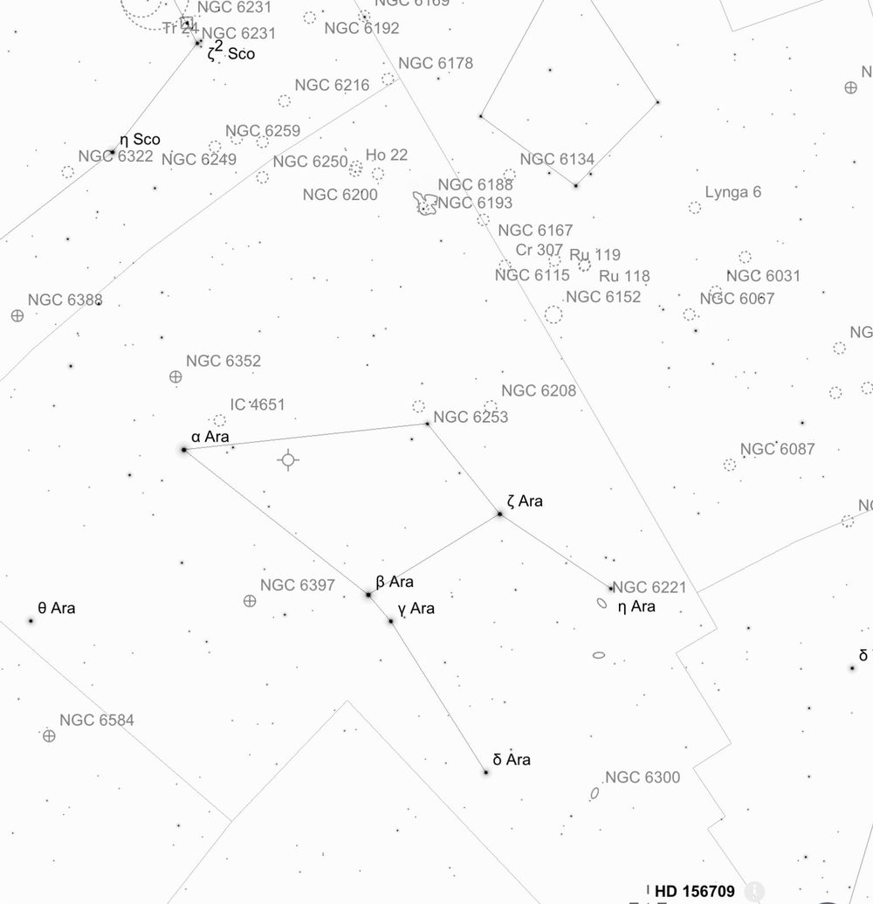
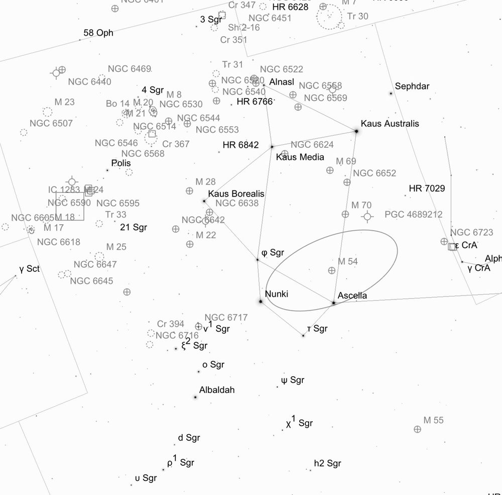
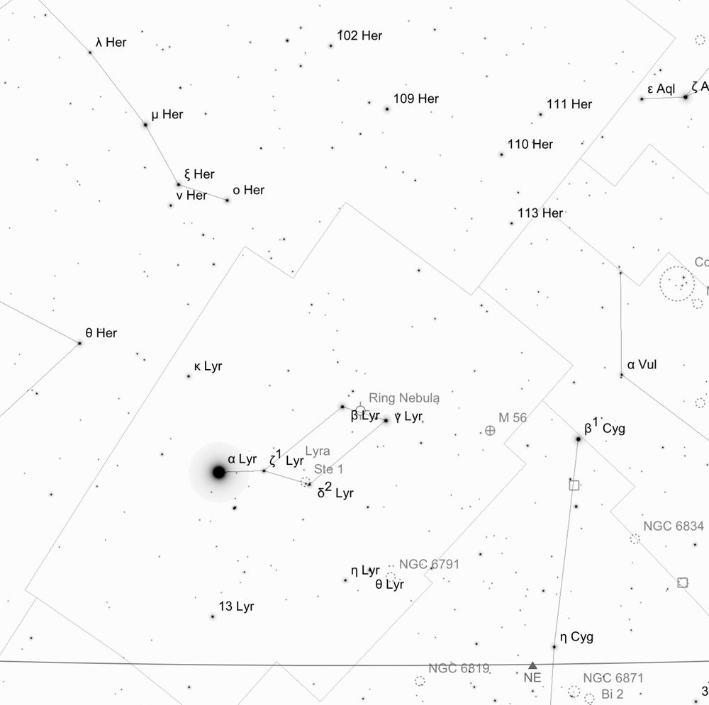
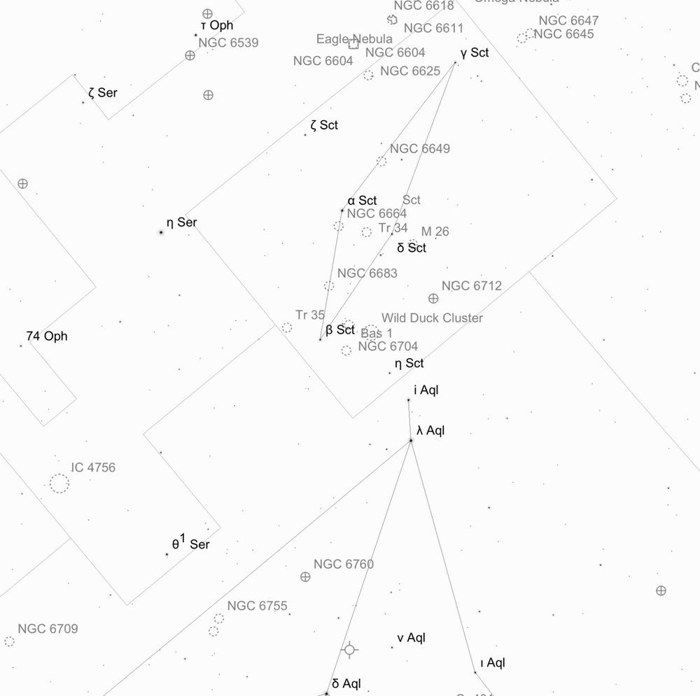
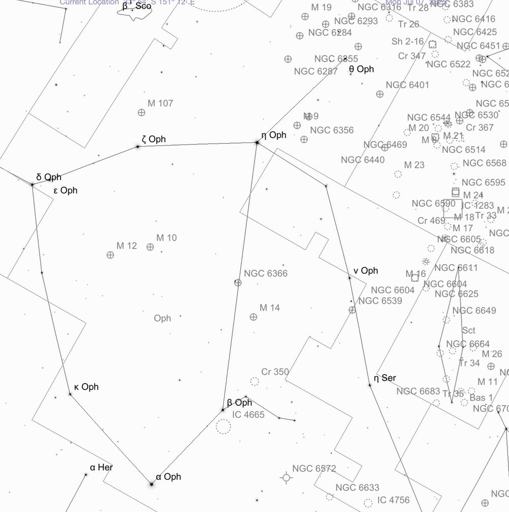
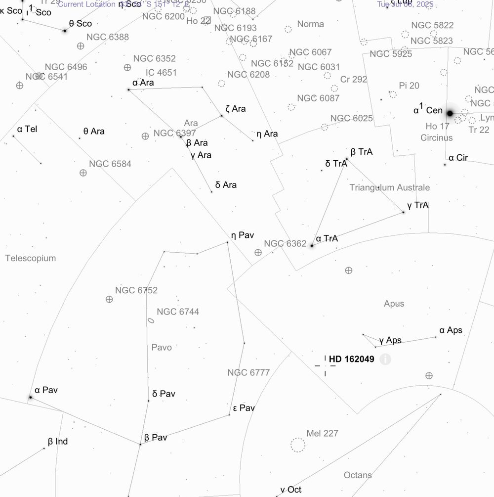

Deep Sky Notes — June 2025
Wiruna Wanderings
We arrived on site early Friday afternoon, to blue skies from horizon to horizon. It was shaping up to be a fantastic weekend. The site was a hive of activity, with the expected clear conditions drawing out more members than the previous month.

With my LX200’s RA drive still sulking, it was another night of star hopping ahead. I started the night in the constellation of Ara, “The Altar”. A relatively bright constellation, it is easy to identify sitting beneath the tail of Scorpius. To the naked eye, you can trace out the constellation as a rough trapezium of 3rd and 4th magnitude stars, using α-Arae, ε-Arae, η-Arae and δ-Arae. At the base of that trapezium sits the bright pair, β-Arae and γ-Arae, only 0.8° apart. Aiming the Telrad just below this pair, I was able to pick out the glow of NGC 6397 easily in my 9x50 finderscope. At 5.6 magnitude and 25.7 arc-min across, this globular cluster is easily resolved into a sea of stars. The dense core gives way to a smattering of outliers trailing out in loops and arcs, giving it the appearance of a dense open cluster. A beautiful view that filled up the field of view in the 26mm eyepiece, and a perfect way to start the night.
If you then point the telescope at α-Arae, approximately 2° away sits the 6.9th magnitude open cluster IC 4651. In the viewfinder I could pick it out as a hazy patch of stars. In the eyepiece, the cluster presents as a loose, sparsely populated group almost blending in with the surrounding field of. I could eye out two circular patterns of stats sitting in the centre of the cluster which give it some structure. Keeping α-Ara and IC 4651 on the edge of the field of view of the viewfinder, should nicely centre the globular cluster NGC 6352. At 8.1 magnitude, this globular has a relatively low surface brightness and is tricky to resolve. At 169x and averted vision, I could begin to resolve some of the brighter stars in the halo giving it a grainy appearance. Following the outline of Ara, I used ε-Arae to pick out NGC 6253. This 10.2 magnitude cluster was hard to pick out in the viewfinder. However, placing ε-Arae the edge of the field of view in the 26mm eyepiece should position this small cluster at the edge of the opposite side of the field. In the eyepiece it presents as a faint knot of 10-20 stars, concentrated in a rough V-shape formation. Next stop was a pair of galaxies, NGC 6215 and NGC 6221. Easy to find due to their proximity (25’ south-east) to the K-type star η-Arae, which appears as a bright orange-yellow star in the same field of view. I could catch the faint glow of NGC6215 as a circular patch of light 2’x1.6’, with an even brightness and no distinctive core or detail apparent. Images reveal it to be a face on spiral (SA(s)c). If you nudge NGC6215 to the top of the field, you can just squeeze NGC 6221 into the same field of view. It appears rounder and larger than its companion, with a slightly brighter core. Images also show it to be a barred spiral (SB(s)bc), with a long sweeping spiral arm arcing around the core. These two galaxies have been found to be interacting and are linked by a neutral hydrogen (HI) bridge, which is thought to be triggering starburst activity in the galaxies. This bridge, a stream of gas connecting the two galaxies, suggests a past interaction or ongoing tidal forces acting on these galaxies. The last stop in Ara was NGC 6362. To find this globular, draw an imaginary line through γ-Trianguli Australis and α-Trianguli Australis (Triangulum Australe is readily distinguishable as an equilateral triangle of bright stars next to Hadar and Rigil Kentaurus), and another perpendicular line through α-Arae and δ-Arae. Point the telescope at the intersection of these two perpendicular lines and you should pick out the fuzzy patch of NGC 6362 in the viewfinder. At 8.1 magnitude it is much fainter than NGC 6397. It displays an even brightness without distinctively brighter core. I could resolve only the brighter stars, appearing otherwise dim with a grainy appearance. A bright star marks the field to the top left.
Next step was Sagittarius which was well placed in the eastern sky. Above the handle of the “frypan” sits a bright patch of nebulosity that is visible to the naked eye. This marks M8, the Lagoon Nebula. This makes for a convenient starting point for the abundant globular clusters that dot this area of sky. This region was featured in the inaugural photos from the Vera Rubin Telescope released on the same weekend.

Sitting ~1° south-east of M20 is the globular cluster, NGC6544. The globular is easy to spot in the viewfinder. It’s small (8.9 arc-min), but relatively bright core (8.2 magnitude) appears mottled with some brighter stars resolved. It has an irregular shape, not like the symmetrical circular halos of other clusters. Averted vision helps to add some richness to the halo of stars. From there I hopped to NGC 6553, ~1° away. Even though it is of a similar magnitude and only slightly smaller in size, it appears as a faint halo rising to slightly brighter core, with no stars resolved.
With Sagittarius creeping higher in the sky, I swung south to find the constellation of Pavo. To pick out Pavo I start with Crux and Triangulum Australe. Drawing a line from Hadar, through β Triangulum Australis, will point you towards α-Pavonis. From α-Pavonis, form a triangle with δ-Pavonis and λ-Pavonis. Move the Telrad so that λ-Pavonis sits just outside the outer ring (~4°), that should position NGC6752 in the finder as a bright cloud of stars. At 5.4 magnitude and over 20 arc-min across, NGC 6752 is bright and well resolved in the eyepiece. It is the fourth-brightest globular cluster in the sky (behind Omega Centauri, 47 Tuc and M22). What really distinguishes this globular are the chains of bright stars that streak out from centre forming a starfish pattern. This globular cluster has a lovely structure and shape to it, making it one of my favourites of the night. Around this time, in between looking through the eyepiece, I managed to catch several meteors, including one brighter fireball that seem to leave a trail for a few seconds straight through the heart of Scorpius.

By about 1.30am I noticed a thin layer of ice had begun to form on the ground, as the Milky Way arched high across the sky. The dew heater seemed to be coping with the lack of moisture in the air. Lyra was sitting low to the North, so I swung down to try my luck on the planetary nebule, M57. It is straightforward to locate, as the planetary sits nicely in between bright stars, β-Lyrae and γ-Lyrae. As soon as I had pointed the telescope, it was immediately evident as a bright ghostly-grey donut shaped disk floating in the field view. Its elongated body, rising to a slightly brighter outer ring. No central star was immediately obvious to me. From there I hopped over to M56, a globular in Lyra. Drawing an imaginary line through β-Lyrae and γ-Lyrae, towards β-Cygni, will point you in the right direction towards M56. Although, this 8.2 magnitude cluster was a bit of a struggle to pick up in the finderscope. In the eyepiece the small core had a smattering of brighter stars resolved. Interestingly, this globular has retrograde orbit within the Milky Way. It is thought to be an ancient cluster, possibly formed in a dwarf galaxy that was later absorbed by the Milky Way. Not long after, with the frost starting to set in to my toes and fingers, I decided to call it a night and head to the tent to defrost for the night.
The following day, the superb conditions continued with not a hint of a cloud. It was a glorious day to sit and read in the sun, or tinker on the telescope in the Main Hall. Saturday also marked the winter solstice, and a communal dinner was held in the kitchen to celebrate. A massive thanks to Greg Priestley and volunteers who helped cook up a feast of sausages, mashed potatoes and apple pie for dessert. After a hearty dinner, I headed to the tent to rug up and wandered onto the field around 6.30pm. Saturday night was shaping up to be another magical night of no cloud, no wind and little moisture. Although my telescope’s electronics were still not functioning, Mark Notary had thankfully set up the Club’s telescopes, include the Club’s own GPS model of the 10inch LX200. So, with the Club scope aligned, some Pink Floyd playing in the background, we were set for another great night of observing.
The first object of note was pointed out to me by Rodney Watters. DY Crucis, also called Ruby Crucis, is an 8.4-8.9 magnitude (variable) carbon star sitting just below β-Crucis. I’ve lost count of the times I have looked at β-Crucis on the way to finding the Jewel Box, and I had never noticed the deep copper-red DY Crucis hiding in the same field of view. Carbon stars are stars with atmospheres that have a higher proportion of carbon than oxygen, giving them their distinctive reddish appearance. There are several lists of carbon stars floating around the internet for those interested in hunting more down.
Next stop was a closer look at M8, the Lagoon Nebula in Sagittarius. With the Club’s set of eyepieces being used on the Club scope, I was able to borrow a 26mm Nagler to try out into my telescope. And what a view it makes. The large field of view is really needed to capture the true scale of the nebulosity and majestic twisted lanes of dust sprinkled throughout the field. Combined with the bright open cluster NGC 6530 sitting within, this vast star-forming region is truly a magnificent view. The nearby Trifid Nebula, M20, although fainter, also gave lovely views with the bright mass of nebulosity bisected by dark veins (which gives it is namesake) clearly prominent. I then hopped over to nearby M55, a 6.9 magnitude globular, sitting below the “Teapot” asterism, that I had missed the previous month. Drawing an imaginary line through σ- Saggittarii and τ-Saggittarii, should point you towards M55. At 19’ this globular is large but has relatively low surface brightness. I could begin to resolve stars across this cluster and was a lovely view compared to some of the fainter unresolved globular clusters that occupy Sagittarius. From there I hoped over to Corona Australis. This constellation’s signature curve of stars making it easy to pick out. My target was the globular cluster, NGC 6541. Drawing a straight line from λ-Scorpii and χ-Scorpii will point you towards NGC 6541. I could easily pick this smudge in the viewfinder. It’s bright core and surrounding halo of stars could not be fully resolved, however.


I then jumped over to the Club’s 10inch, set-up next to my own telescope and we slewed over to M17, the Swan Nebula in Ophiuchus. With a low-power eyepiece in, it makes for a beautiful view. A bright cloud of nebulosity, with an intervening band of dust creates the illusion of a thin arc of nebulosity forming the “neck” of a swan. With a perfectly placed bright star to mark the swan’s eye. A beautifully shaped nebulae, and one of my favourites of the night. We then slewed over to M11, an open cluster in Scutum. Although the Club scope’s go-to function made finding M11 an effortless task, I had tracked down M11 manually the previous night. To find M11, I started from Aquila (a diamond shaped constellation sitting low in the north). Drawing a line from 0.77 magnitude Altair, through δ-Aquilae and γ-Aquilae, will point you towards the constellation of Scutum (I struggle to trace out Scutum on its own in this bright part of the Milky Way). Starting with γ-Aquilae in the viewfinder, I followed a curved lines of 3 stars (γ-Aquilae, 12-Aquilae, η-Scuti). Sitting at the end of this chain should be a hazy patch in the viewfinder. M11 is a beautiful, bright open cluster. Its core is a dense mass of stars, like a very loose globular cluster. It’s subtle V-shape of stars giving it its namesake, takes some imagination. I think the “Flying Ducks” may be a more appropriate name. Scutum is dotted with several open clusters often overlooked in favour of M11. So, I slewed to nearby open cluster, M26. This 8th magnitude cluster is bright, but much smaller and sparsely populated relative to its neighbour M11. It appears as a loose grouping of 15-30 stars. With α-Scuti in the field of view, you can pick out another cluster, NGC 6664. The field is dominated by the bright orange-yellow α-Scuti. I struggled to identify this cluster as it shows up as very sparse, barely indistinguishable from the surrounding field of view, which itself is strangely devoid of stars. Not much stands out about this field of view. Juxtaposed to that is the nearby, NGC 6683. This cluster lies in a beautifully rich starry field of view. Within the rich field sits a slightly denser pocket of stars, not much brighter than surrounding stars making it hard to pick out. Next was the nearby M16, otherwise known as the Eagle Nebula in Serpens Cauda. With the 31mm eyepiece in the club scope, this large patch of nebulosity filled up the entire field of view. Adding UHC filter (also from the Club’s collection) significantly improved the contrast and brightens the view significantly. An arc of nebulosity vaguely resembles an eagle’s wings in flight, but it took some imagination on my part.

The nearby constellation of Ophiuchus has numerous globular clusters of note, the two brightest being M10 and M12. First stop was the 6.6 magnitude M10, which appears large with a well resolved core. This cluster displays chains of brighter stars streak out from the core. I noted two big chains of stars arcing out to the top left and bottom right, giving the cluster an almost spiral-like shape. A beautiful view. Next was M12. This cluster is similar in brightness and size as M10. The brighter stars are well resolved. What really differentiates this globular is it shape, displaying more irregular ragged edges as compared to the symmetry of M10. With averted vision I could being to resolve stars in the core. On the other hand, there is M14. This is much lower surface brightness and could not resolved any stars, a “fuzzy snowball” is what I noted down.
The night would not be complete without an attempt at some faint fuzzies. I slewed the club scope over to NGC 6744 in Pavo. This face on spiral makes for some lovely images. This 9th magnitude galaxy easily stands out in the eyepiece. At 15.5 x 10.2 arc-min, I could make out a bright core with a large circular symmetrical halo surrounding it. Nearby is NGC 6684. This is a much smaller galaxy with an elongated shape with a bright core and no halo. Needed averted vision to really pick it out of the field of view.
After two glorious nights (apart from the below zero temperatures) it had been a remarkable weekend of observing. Unfortunately, Sunday morning it was time to pack-up and to head back to Sydney for work on Monday. Thanks to Trevor and Greg who helped me trouble shoot some potential battery issues. Maybe by next month I’ll have my RA drive up and running. Until next month. Clear skies.